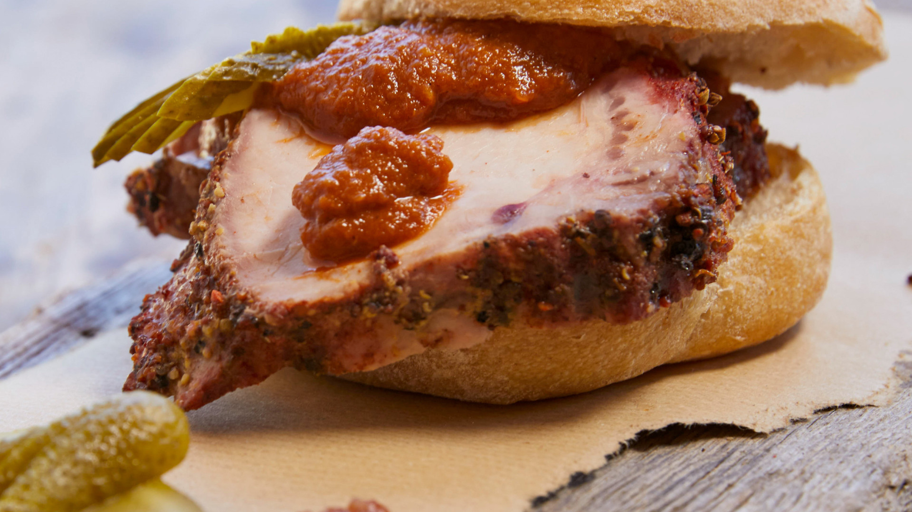

German Hamburger
To kill the hunger in a shot.

Recipe
- 1 ½ pounds lean ground beef
- ½ onion, finely chopped
- ½ cup shredded Colby Jack or Cheddar cheese
- 1 large egg
- 1 (1 ounce) envelope dry onion soup mix
- 1 clove garlic, minced
- 1 tablespoon garlic powder
- 1 teaspoon soy sauce
- 1 teaspoon Worcestershire sauce
- 1 teaspoon dried parsley
- 1 teaspoon dried basil
- 1 teaspoon dried oregano
- ½ teaspoon crushed dried rosemary
- pinch of salt and pepper or to taste
Instructions
Step 1
- Gather all ingredients. Preheat an outdoor grill for high heat and lightly oil the grate.
Step 2
- Meanwhile, combine ground beef, onion, cheese, egg, onion soup mix, minced garlic, garlic powder, soy sauce, Worcestershire sauce, parsley, basil, oregano, rosemary, salt, and pepper in a large bowl.
Step 3
- Use your hands to form the mixture into 4 patties.
Step 4
- Cook patties on the preheated grill until no longer pink in the center and the juices run clear, about 4 to 5 minutes per side.
Step 5
- An instant-read thermometer inserted into the center should read at least 165 degrees F (74 degrees C).